MELSEC-F series Option

Connection cables for PLC and peripheral devices and signal conversion interfaces are available.
Display module
During machine setup, adjustment, or program changes, setting and monitoring of timers, counters, and data registers is always required. By using a display module (DM), setting and monitoring of these items can be achieved as reasonable cost.
| Model | Applicable FX PLC | ||||||||||
|---|---|---|---|---|---|---|---|---|---|---|---|
| FX 3S |
FX 3G |
FX 3U |
FX 3GC |
FX 3UC |
|||||||
| 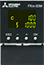 | FX3S-5DM To be discontinued |
*1 ○ Max. 1 unit |
× | × | × | × | |||||
| 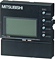 | FX3G-5DM To be discontinued |
× | *2 ○ Max. 1 unit |
× | × | × | |||||
| 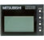 | FX3U-7DM To be discontinued |
× | × | ○ Max. 1 unit |
× | *3 ○ Max. 1 unit |
|||||
| 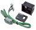 | FX3U-7DM-HLD To be discontinued |
× | × | ○ | × | *4 ○ |
|||||
- *1Supported by FX3S Ver. 1.20 or later.
- *2Supported by FX3G Ver. 1.10 or later.
- *3Standard equipped on FX3UC-32MT-LT (-2). Cannot be connected to FX3UC-**MT/D (SS) and FX3UC-16MR/D (S)-T.
- *4Can only be connected to FX3UC-32MT-LT (-2).
Converter for personal computer connection/interface unit
Conversion interface units for connecting FX series PLC and PC.
| Model | Applicable FX PLC | |||||||||||
|---|---|---|---|---|---|---|---|---|---|---|---|---|
| FX 3S |
FX 3G |
FX 3U |
FX 3GC |
FX 3UC |
Others | |||||||
| 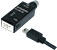 | FX-USB-AW | × | × | ○ | × | ○ | FX2N-10GM, FX2N-20GM, FX2N-1RM (-E)-SET |
|||||
| 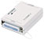 | FX-232AWC-H | ○ | ○ | ○ | ○ | ○ | ||||||
RS-422 connection cable for PC
| Model | Length | Main purpose | |
|---|---|---|---|
| 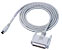 | FX-422CAB0 | 1.5 m | Can be combined with FX-232AW (C) (-H) for program transfer. |
| 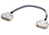 | FX-422CAB | 0.3 m | Can be combined with FX-232AW (C) (-H) for program transfer. |
| FX-422CAB-150 | 1.5 m | ||
| FX-422AW0 | 1.5 m | For (electrically isolated) connection to RS422 devices such as A6GPP and A7PHP. Cannot be used for PC. | |
RS-232C cable for communication
| Model | Length | Main purpose | |
|---|---|---|---|
| 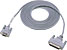 | F2-232CAB-1 | 3.0 m | [For DOS/V PC (9 Pin)] Can be combined with FX-232AW (C) (-H) for program transfer. |
| 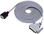 | F2-232CAB-2 | 3.0 m | [For PC9800 PC (14 Pin)] Can be combined with FX-232AW (C) (-H) for program transfer. |
| 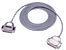 | F2-232CAB | 3.0 m | [For PC (25 Pin)] Can be combined with FX-232AW (C) (-H) for program transfer. |
| 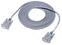 | FX-232CAB-1 | 3.0 m | [For DOS/V PC (9 Pin)] Can be combined with PLC RS-232C function expansion board for program transfer. |
| 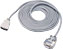 | FX-232CAB-2 | 3.0 m | [For PC9800 PC (14 Pin)] Can be combined with PLC RS-232C function expansion board for program transfer. |
PLC connection cable for FX-30P
| Model | Length | Main purpose | |
|---|---|---|---|
| 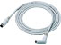 | FX-20P-CAB0 | 1.5 m | Can connect to FX0, FX0S, FX1S, FX0N, FX1N, FX2N, FX3S, FX3G, FX3U, FX1NC, FX2NC, FX3GC, FX3UC PLCs. |
| 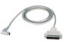 | FX-20P-CAB | 1.5 m | Can connect to FX1, FX2, FX2C PLCs. |
| 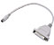 | FX-20P-CADP | 0.3 m | Conversion cable to convert FX-20P-CAB (D-sub 25 pin) to MINI DIN 8 pin for FX0, FX0S, FX1S, FX0N, FX1N, FX2N, FX3S, FX3G, FX3U, FX1NC, FX2NC, FX3GC, FX3UC PLCs. |
Cable (for extended extension)
| Model | Length | Main purpose | |
|---|---|---|---|
| 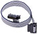 | FX0N-30EC | 30 cm | [Extension cable] Cable for extending extension units. Only one cable can be used in a system. Combine with FX2N-CNV-BC connector conversion adapter when extending extension block or special function block. Each extension device includes or is equipped with standard connection cable. |
| FX0N-65EC | 65 cm | ||
Extension Module Options
| Model | Length | Main purpose | |
|---|---|---|---|
| 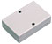 | FX2N-CNV-BC | - | [Connector conversion adapter] Links the connection between extension cable and block side standard cable when extension block or special function block is extended by FX0N-30EC or FX0N-65EC extension cable. (Connection method ⇒ "input/output extension device, terminal block") |
| 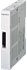 | FX2NC-CNV-IF | - | [Conversion adapter] Conversion adapter for connected FX2N extension devices to FX3GC or FX3UC PLCs. |
| 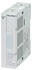 | FX3UC-1PS-5V | - | [Extension power supply unit] Adds power when FX3GC or FX3UC series extension power is insufficient. 5 V DC 1 A |
| 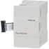 | FX3U-1PSU-5V | - | [Extension power supply unit] Adds power when FX3G or FX3U series extension power is insufficient. Internal 5 V DC 1 A*1 Internal 24 V DC 0.3 A*1 |
- *1Degrading occurs when the ambient temperature exceeds 40°C.
CF card special adapter
| Model | Applicable FX PLC | ||||||||||
|---|---|---|---|---|---|---|---|---|---|---|---|
| FX 3S |
FX 3G |
FX 3U |
FX 3GC |
FX 3UC |
|||||||
| 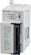 | FX3U-CF-ADP Discontinued |
× | × | ○*1 | × | ○*2 | |||||
- *1Supported by FX3U Ver. 2.61 or later. Only 1 unit can be connected to the PLC, and function expansion board is required.
It is treated the same as a communication function expansion board or communication special adapter and occupies one communication channel (ch). - *2Supported by FX3UC Ver. 2.61 or later. Only 1 unit can be connected to the PLC, and function expansion board is required in the case of FX3UC-32MT-LT (-2).
It is treated the same as a communication function expansion board or communication special adapter and occupies one communication channel (ch).
Terminal block
It is possible to change the connector of connector type main unit (FX3GC, FX3UC), extension block, or positioning unit to terminal block.
I/O wiring time can be reduced.
By utilizing terminal blocks with built-in I/O components, it is possible to receive 100 V AC inputs or to drive high loads by transistor or relay.
| Model | No. of input points |
No. of output points |
Function | |
|---|---|---|---|---|
| 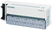 | FX-16E-TB To be discontinued |
up to 16 inputs or 16 outputs | Connects directly to PLC input/output terminals. I/O wiring time can be reduced by using terminals and relaying the wiring of I/O devices located farther from the PLC. |
|
| FX-16E-TB/UL To be discontinued |
||||
| 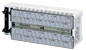 | FX-32E-TB To be discontinued |
up to 32 inputs or 32 outputs Can be divided into 16 inputs and 16 outputs |
||
| FX-32E-TB/UL To be discontinued |
||||
| 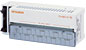 | FX-16EX-A1-TB To be discontinued |
16 points | - | AC input signal type |
| FX-16EX-A1-TB/UL To be discontinued |
||||
| 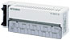 | FX-16EYR-TB To be discontinued |
- | 16 points | Relay output type |
| FX-16EYR-ES-TB/UL To be discontinued |
||||
| FX-16EYS-TB To be discontinued |
Triac output type | |||
| FX-16EYS-ES-TB/UL To be discontinued |
||||
| FX-16EYT-TB To be discontinued |
Transistor output type (sink) | |||
| FX-16EYT-ES-TB/UL To be discontinued |
||||
| FX-16EYT-ESS-TB/UL To be discontinued |
Transistor output type (source) | |||
I/O cable
| Model | Length | Main purpose | |
|---|---|---|---|
| 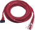 | FX-16E-500CAB-S | 5 m | [General purpose I/O cable] Loose wire with 20 pin connector on one side only |
| 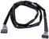 | FX-16E-150CAB To be discontinued |
1.5 m | [I/O cable for terminal block] Flat cable (with tube) with 20 pin connector on both ends |
| FX-16E-300CAB To be discontinued |
3 m | ||
| FX-16E-500CAB To be discontinued |
5 m | ||
| 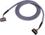 | FX-16E-150CAB-R To be discontinued |
1.5 m | [I/O cable for terminal block] Multi-core cable with 20 pin connector on both ends |
| FX-16E-300CAB-R To be discontinued |
3 m | ||
| FX-16E-500CAB-R To be discontinued |
5 m | ||
| FX-32E-150CAB To be discontinued |
1.5 m | [I/O cable for terminal block supporting FX2NC-64ET] Flat cable (with tube) with 40 pin connector on FX2NC-64ET side and two 20 pin connectors on terminal block side. |
|
| FX-32E-300CAB To be discontinued |
3 m | ||
| FX-32E-500CAB To be discontinued |
5 m | ||
| 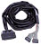 | FX-A32E-150CAB | 1.5 m | [I/O cable for A6TBXY36 connector/ terminal block conversion unit] |
| FX-A32E-300CAB | 3 m | ||
| FX-A32E-500CAB | 5 m | ||
Connector (for FX3GC, FX3UC connector I/O extension block)
| Model | Main purpose | |
|---|---|---|
| 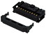 | FX2C-I/O-CON | [Connector for flat cable] AWG28 (0.1 mm2): 10 piece set
357J-4664N Attachment |
| FX2C-I/O-CON-S | [Connector for loose wire] AWG22 (0.3 mm2): 5 set
|
|
| FX2C-I/O-CON-SA | [Connector for loose wire] AWG20 (0.5 mm2): 5 set
|
|
| 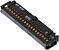 | FX-I/O-CON2 | [Connector for flat cable] AWG28 (0.1 mm2): 2 piece set
357J-4664N Attachment |
| 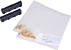 | FX-I/O-CON2-S | [Connector for loose wire] AWG22 (0.3 mm2): 2 set
|
| FX-I/O-CON2-SA | [Connector for loose wire] AWG20 (0.5 mm2): 2 set
|
|
Spare parts for FX3GC, FX3UC
| Model | Length | Main purpose | |
|---|---|---|---|
| 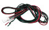 | FX2NC-100MPCB | 1 m | [Power cable for main unit] Cable for providing 24 V DC power to FX3GC, FX3UC main unit (Included with main unit) |
| 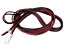 | FX2NC-100BPCB | 1 m | [Power cable for extension input block] Cable for providing 24 V DC power to FX2NC input extension block or FX2NC, FX3UC special function block (Included with main unit) |
| 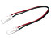 | FX2NC-10BPCB1 | 0.1 m | [Input power crossover cable for extension input block] Cable for delivering 24 V DC input power to multiple FX2NC input extension blocks or FX2NC, FX3UC special function blocks (Included with main unit) |
Simulated input switch
| Model | Main purpose | |
|---|---|---|
| 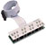 | FX2C-16SW-C Discontinued |
[Simulation input switch for connector type input] Can be connected to FX3GC, FX3UC series main unit or FX2NC-**EX input connector Includes 0.5 m connector cable |
| 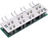 | FX2C-16SW-TB Discontinued |
[Simluation input switch for FX-16E-TB terminal block] Can only be connected to the lower number 16 pt side in the case of FX-32E-TB Cannot be used for AC input |
Expansion board, adapter (Other)
| Model | Main purpose | For FX3S |
|---|---|---|
| 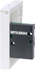 | FX3S-CNV-ADP | [Adapter for special adapter connection] For connecting FX3 series special adapter (communication, analog) |
For FX3G |
| 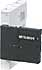 | FX3G-CNV-ADP To be discontinued |
[Adapter for special adapter connection] For connecting FX3 series special adapter (communication, analog) |
For FX3S, FX3G |
| 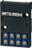 | FX3G-8AV-BD | [8 pt analog volume function expansion board] Adds 8 volume switches in addition to the 2 switches built-in. |
For FX3U, FX3UC-32MT-LT (-2) |
| 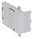 | FX3U-CNV-BD | [Function expand board for special adapter connection] Connector conversion for FX3U-***ADP connection |
| 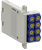 | FX3U-8AV-BD | [8 pt analog volume function expansion board] Adds 8 volume switches to the PLC |
Memory cassette, memory board
| Model | Main purpose | |
|---|---|---|
| For FX3S, FX3G | 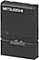 | FX3G-EEPROM-32L | [EEPROM memory cassette] 32000 step EEPROM memory that PLC can write to and does not require battery backup. (When FX3S is used, 16000 steps can be used.) Function to transfer program between PLC and memory cassette is built-in. Includes protect switch for preventing accidental writing. Convenient for transferring program to multiple PLCs or delivering program to distant places. |
| For FX3U, FX3UC | ||
| FX3U-FLROM-16 | [Flash memory cassette] Flash memory that PLC can write to and does not require battery backup. Includes protect switch for preventing accidental writing. (Maximum 16000 steps) *Supported by FX3UC Ver. 2.20 or later |
|
| 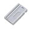 | FX3U-FLROM-64 | [Flash memory cassette] Flash memory that PLC can write to and does not require battery backup. Includes protect switch for preventing accidental writing. (Maximum 64000 steps) |
| FX3U-FLROM-1M | [Flash memory cassette] Flash memory that PLC can write to and does not require battery backup. Includes protect switch for preventing accidental writing. (Maximum 64000 steps) Up to 1.3 MB of symbolic information can be stored. *Supported by FX3U, FX3UC Ver. 3.00 or later |
|
| 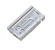 | FX3U-FLROM-64L | [Flash memory cassete with loader function] Flash memory with loader function that PLC can write to and does not require battery backup. Includes protect switch for preventing accidental writing. (Maximum 64000 steps) *Supported by FX3UC Ver. 2.20 or later |
Battery (spare parts)
| Model | Main purpose | |
|---|---|---|
| For FX1N | ||
| 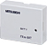 | FX1N-BAT | [Battery for keep memory backup] Battery for long term retention of FX1N PLC capacitor keep (10 day rentention) area devices. PLC internal devices can be held over a long period before operation of the machine during long-term storage or during long distance transportation. Battery life: 2 years (ambient temperature: 25°C) |
For FX2N |
| 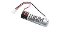 | F2-40BL (Included main Unit) | [Battery for memory backup] Backs up contents of FX2N built-in RAM memory or option RAM memory. It is also required for backup of auxiliary relays and data registers held against power failure and clock data. Battery life: 5 years, when RAM cassette is used 3 years |
For FX2NC |
| 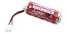 | FX2NC-32BL (Included main Unit) To be discontinued |
[Battery for memory backup] Backs up contents of PLC built-in RAM memory. It is also required for backup of auxiliary relays and data registers held against power failure and clock data. Battery life: 3 years |
For FX3G, FX3U, FX3GC, FX3UC |
| 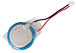 | FX3U-32BL (Included main Unit) | [Battery for memory backup] Backs up devices in FX3G, FX3GC not held by EEPROM. It is also required for backup of auxiliary relays and data registers held against power failure and clock data. Battery life: 5 years (ambient temperature: 25°C) |
Pulse output/Positioning (for option)
Servo motor connection cable
| Model | Length | Description | |
|---|---|---|---|
| E-GMH-200CAB | 2 m | [MR-H series servo amplifer connection cable] I/O operation signal part has 20-pin connector for connection to Mitsubishi terminal block. |
|
| E-GMJ-200CAB | 2 m | [MR-J series servo amplifer connection cable] Can directly connect FX2N-10GM/FX2N-20GM and servo amplifer. I/O operation signal part has 20-pin connector for connection to Mitsubishi terminal block. |
|
| E-GMJ2-200CAB1A | 2 m | [MR-J2, MR-J2-Super series servo amplifer connection cable] Can directly connect FX2N-10GM/FX2N-20GM and servo amplifer. |
|
| E-GMC-200CAB | 2 m | [MR-C series servo amplifer connection cable] Can directly connect FX2N-10GM/FX2N-20GM and servo amplifer. I/O operation signal part has 20-pin connector for connection to Mitsubishi terminal block. |
|
| E-GM-200CAB | 2 m | [General purpose connection cable] Has connector on both sides. Can connect to general purpose drive unit via Mitsubishi terminal block. |
|
Connection extension cable
| Model | Length | Description | |
|---|---|---|---|
| FX2N-GM-65EC | 65 cm | [Connection extension cable between PLC and FX2N-10GM/FX2N-20GM] One cable can be used in a system. Standard connection cable (55 mm) is included with FX2N-10GM/FX2N-20GM. |
|
| F2-RS-5CAB | 5 m | [Resolver extension cable for FX2N-1RM] Resolver can be extended up to 100 m extension by linking multiple cables. |
|
Peripheral device connection cable
| Model | Length | Description | |
|---|---|---|---|
| (1) E-20TP-CAB0 | 3 m | [E-20TP connection cable] FX2N-10GM/FX2N-20GM (MINI DIN 8-pin) ⇔ E-20TP (MINI DIN 8-pin) Cable length is different between (1) and (2). (1) E-20TP-CAB0 (3 m) is included with E-20TP-SET0. |
|
| (2) FX-20P-CAB0 | 1.5 m | ||
Spare parts
| Model | Length | Description |
|---|---|---|
| FX2N-GM-5EC | 55 mm | [Connection cable between PLC and FX2N-10GM/20GM] One cable is included with FX2N-10GM/20GM. |
Handy programming panel
| Model | Applicable FX PLC | Main purpose | |||||
|---|---|---|---|---|---|---|---|
| FX 3S |
FX 3G |
FX 3U |
FX 3GC |
FX 3UC |
|||
| FX-30P To be discontinued |
*1 ○ |
○ | ○ | ○ | *2 ○ |
It is possible to write programs (sequence programs and parameters) to the FX series PLCs and to monitor and test devices. | |
- *1When connecting to FX3S, supported by FX-30P firmware 1.50 or later.
- *2When connecting to FX3GC, supported by FX-30P firmware 1.30 or later.